来源：https://k4h4dcpi91.feishu.cn/docx/GJh0dHJVgoB1L5xb6p3c5uKVnCf
大家好，我是小李同学。特别爱折腾的98年陕西小伙子。干过服务员，也自学摄影创业过疫情到来，干过健身教练，也民宿创业过，目前是在厦门创业做电商。从对电商毫无概念，到现在埋头苦干有点思路，非常感谢社群里的诸位大佬们的文章和私下的帮助，希望有机会可以跟厦门和杭州的圈友链接（经常会去杭州学习）。
先放成绩（，下面是三个账号的成绩，其它的就不一一展示了）
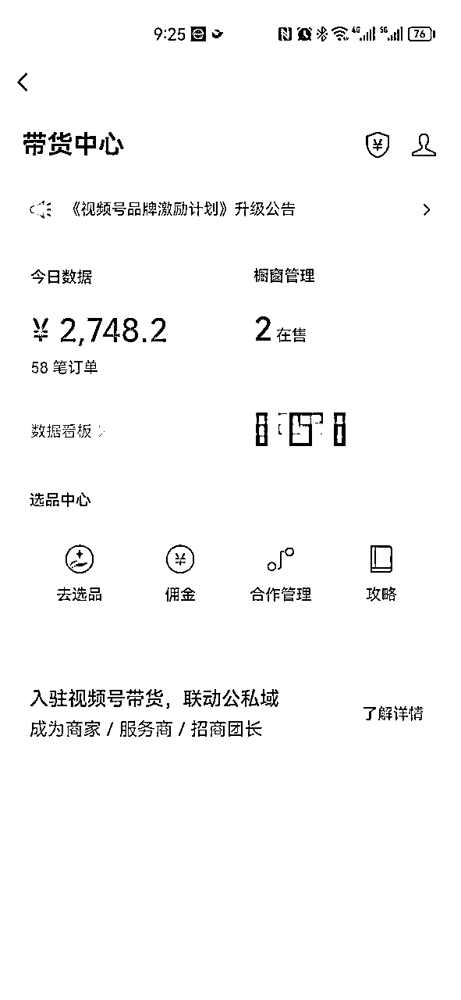
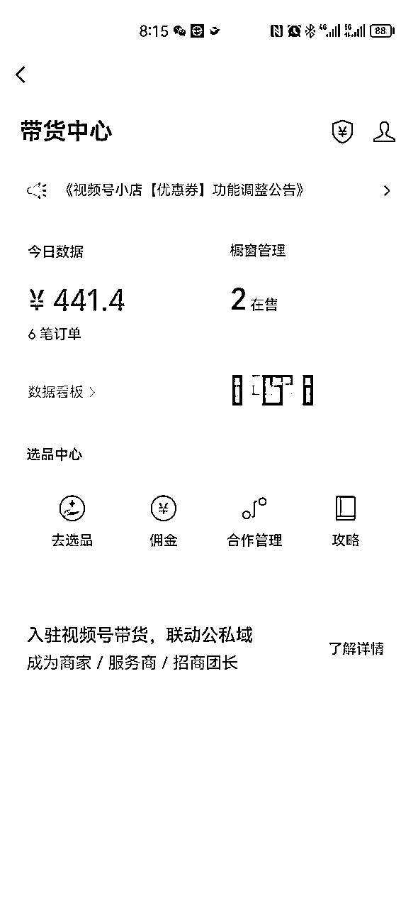
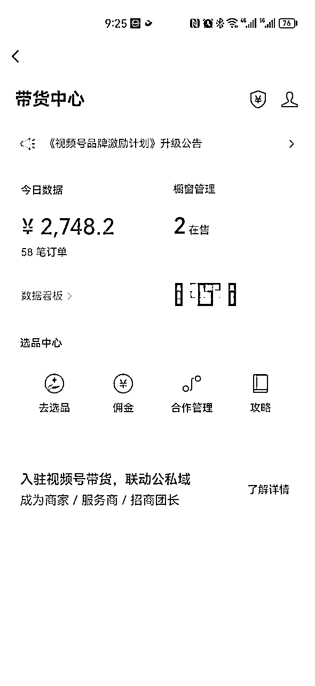
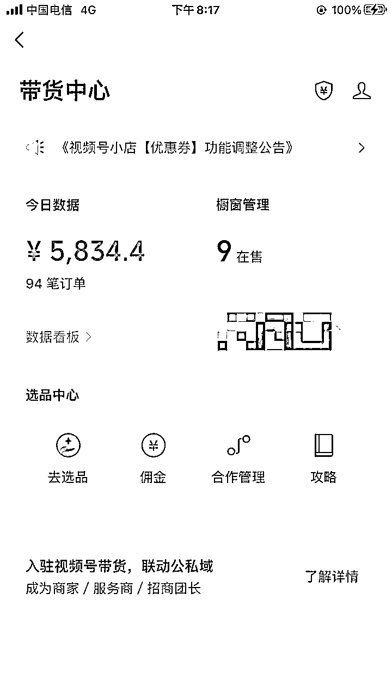
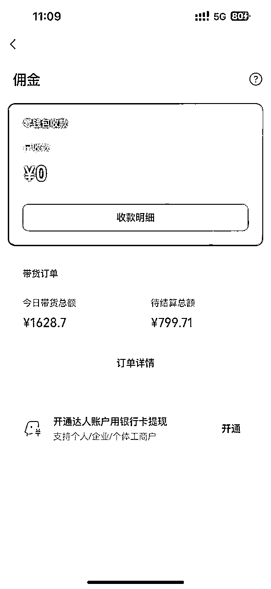
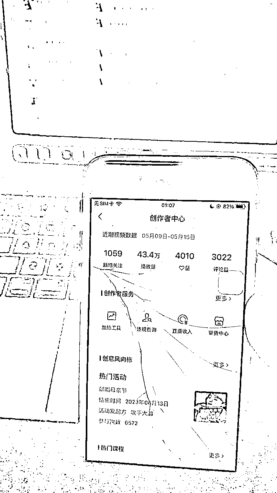
4.18日加入的生财，第二篇发帖，真的感谢生财让我打开认知并一步步成长。话不多数，直接开始。之前写过的一篇，大家也可以看看
正文内容如下：
一，账号搭建
二，抄对标爆款模版
三，找素材
四，剪辑发布
账号：一个身份证可以认证5个微信账号，一个微信账号开通一个视频号，开通后根据品类起名，最近好卖的是经文类和文昌塔这种与考试相关的品类。
名称及备注：名称中不能出现和佛教，道教有关的名称，然后就是备注，我卖的是经文品类，账号起名后简介简单干脆：视频同款商品在👇🏻购买
选品加橱窗流程（用个废的视频号演示）：
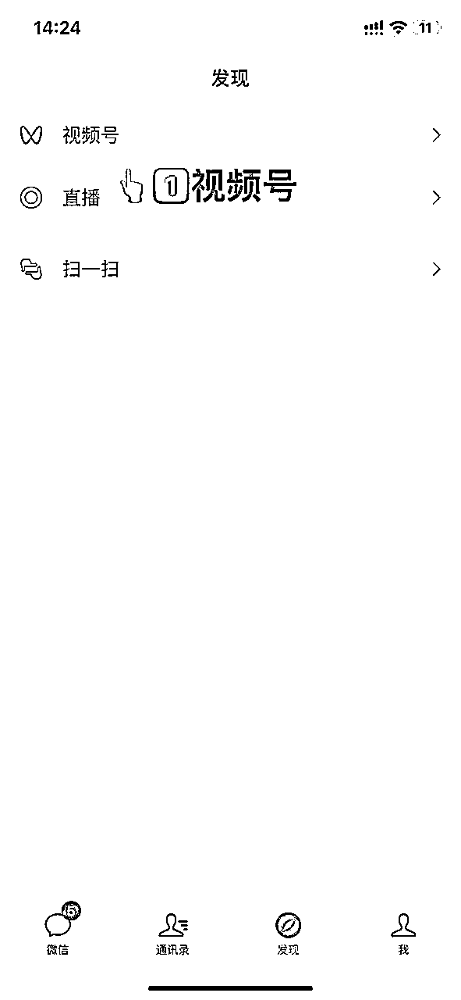
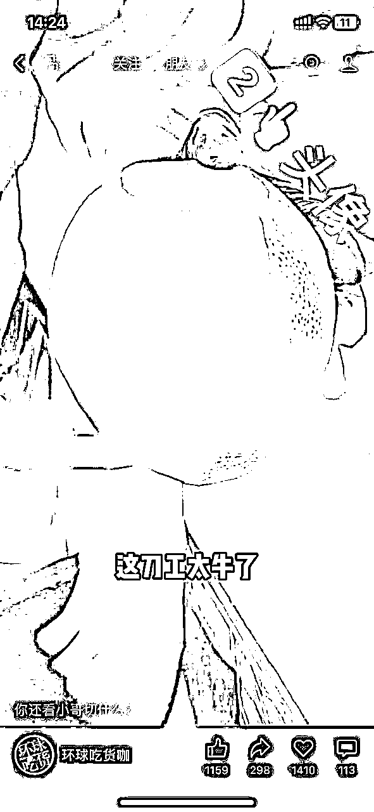
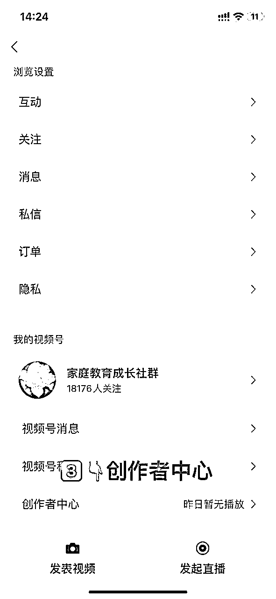
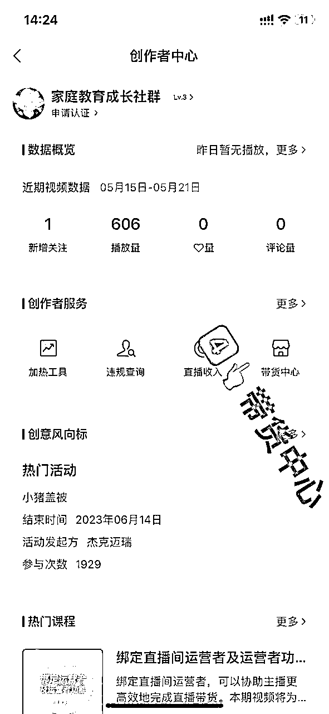
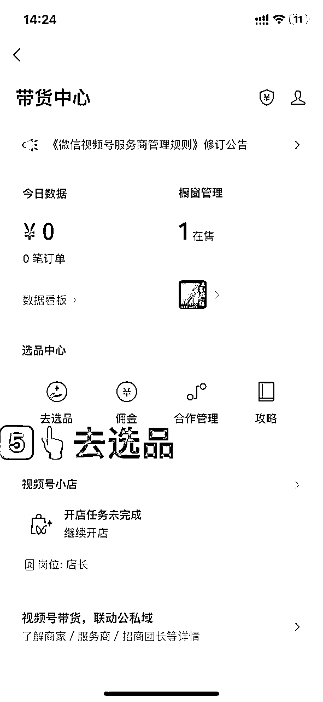
选品广场搜索产品名后添加至橱窗。
经文产品视频举例：
剪辑就不多说了，很多剪辑教程社群里都有，重点强调新人一定注意要避免的坑，因为我踩过，不希望大家踩。
诸位圈友，共同学习，无限进步！（有帮助的话，点个赞呗🌹）